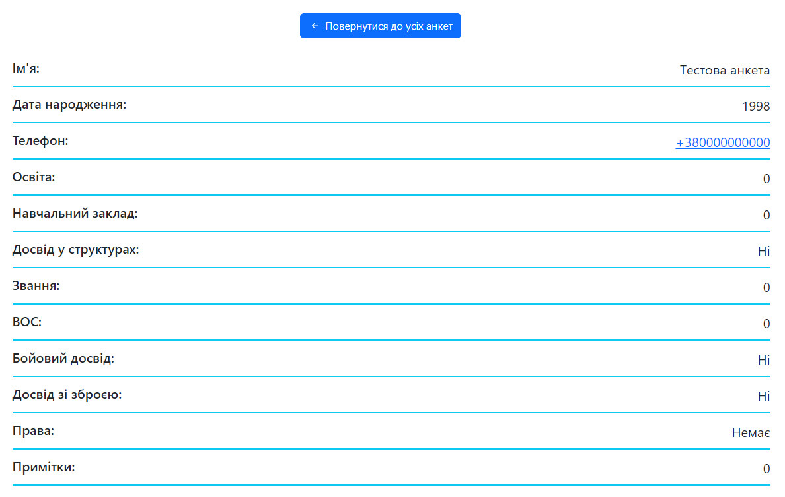
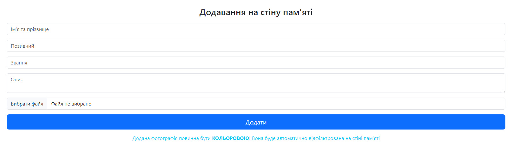

Для того, щоб увійти в панель сайту необхідно перейти за посиланням https://210berlingo.army/admin.
Після завантаження сторінки відобразиться форма із вхідним полем для паролю.
Щоб авторизуватися потрібно ввести пароль |вказано у текстовому документі|.
Після натискання
кнопки «Увійти» (або ж
клавіші «Enter» на клавіатурі) буде завантажено меню навігації та інструкції по використанню (такі ж самі,
що і в цьому файлі). Починаючи з цього моменту, можна використовувати панель.
В навігації є 3 посилання на відділи панелі, а саме:
Коли завантажиться сторінка «Анкети на вступ», з правої сторони з’явиться таблиця із усіма анкетами на вступ. У ній відображаються основні дані людини, що заповнювала анкету, а саме: ім’я, рік народження і телефон. В колонці «Дія» (перша справа) присутні 2 функції, які можна використати для керування анкетою.
При натисненні на текст «Деталі» завантажиться сторінка із усіма деталями вибраної анкети (наприклад: ім’я, рік народження, телефон, освіта, чи має досвід, звання тощо). Зверху є кнопка «Повернутися до усіх анкет», при натисненні на яку, можна повернутися на сторінку із усіма анкетами.
Як тільки буде перейдено по даному посиланню, вибрана анкета одразу видалиться із бази даних і відновити її буде неможливо.
При завантаженні у верхньому блоці відображається форма для додавання загиблого на стіну пам’яті, а в нижньому таблиця із усіма загиблими.
У формі присутні 5 полів вводу. 4 з них – текстові. Туди заноситься ім’я, позивний, звання і опис. У 5 поле потрібно завантажити файл із фотографією загиблого. Завантажена фотографія обов’язково повинна бути кольоровою. Вона буде автоматично оброблена на сторінці «Стіна пам’яті». Якщо завантажити чорно-білу фотографію, то це призведе до неправильного відображення картинки (вона стане практично чорною та нерозбірливою).
При натисненні на посилання «Редагувати» завантажиться сторінка для редагування загиблого. На ній присутня форма із раніше введеними даними та демонстрація завантаженої картинки. Можна змінити абсолютно кожне поле та картинку. Для того, щоб підтвердити змінені дані необхідно натиснути на кнопку «Редагувати».
При натисненні на посилання «Видалити» буде одразу здійснено видалення загиблого із таблиці без можливості відновлення даних.
При завантаженні з правої сторони з’явиться 2 блоки (зверху й знизу). У верхньому блоці відображається форма длястворення нового поста на сайті, а в нижньому таблиця із усіма постами. Загалом, зовнішній вигляд сторінки майженічимне відрізняється від стіни пам’яті.
У формі є одне текстове та одне файлове поле вводу. У перше поле потрібно ввести опис поста (підпис, що бачитиме користувач). А в друге поле завантажити фотографії. Вони мають бути в горизонтальному положенні та приблизно одного розміру. Мінімальна кількість фотографії – 6, проте максимального значення не встановлено.
При натисненні на посилання «Редагувати» відкриється сторінки із редагуванням обраного поста. Форма абсолютно така ж сама. Можна змінити опис або завантажити нові фотографії. Важливий момент: при редагуванні поста усі попередні фотографії видаляються назавжди, а додаються лише ті, що були завантажені у файлове поле.
При натисненні на посилання «Видалити» буде одразу здійснено видалення поста із таблиці без можливості відновлення даних.